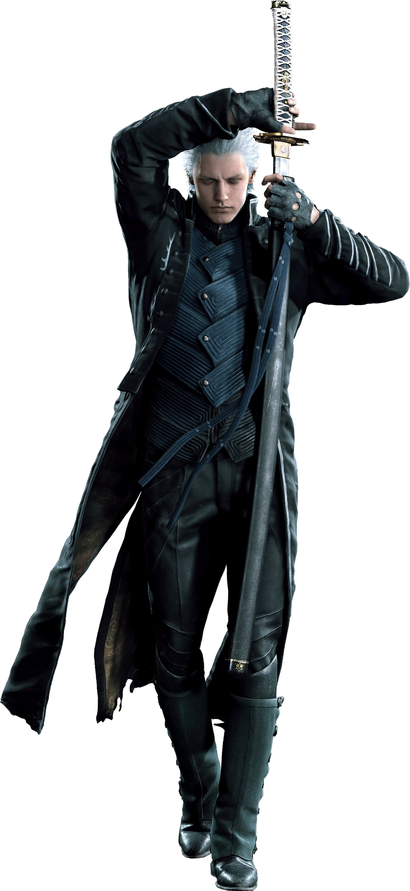

About Vergil
Following the death of their mother as children, Vergil and Dante go their separate ways, with Vergil rejecting his humanity and embracing his demonic heritage, in contrast with his younger brother's embrace of humanity and initial rejection of the demonic. Stoic and reserved, Vergil displays a willingness to do anything in his quest to obtain the power of his father, Sparda.
Vergil and Dante
Vergil character
- They are on the war
- Dont like each other
Vergil's Father
His name is Sparda Click on the links below to read about him: